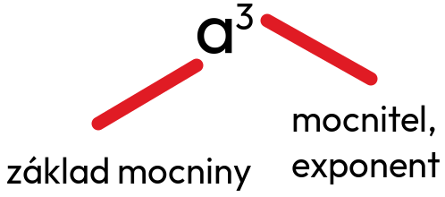

Třetí mocnina
Základy
a × a × a = a³ - „á na třetí“

mocnitel - kolikrát násobím číslo samo sebou
základ
- číslo, které umocňuji
Třetí mocnina záporného čísla je vždy záporná.
(-7)³ = -7 × (-7) × (-7) = -343
Pozor!
(-2³) ≠ -2³
Pravidlo
(a + b)³ ≠ a³ + b³
Umocňování čísel končících 0
8000³
- odmyslím si všechny poslední nuly - 8
- spočítám třetí mocninu - 8³ = 512
- vrátím 3x tolik nul - 512 000 000 000
8000³ = 512 000 000 000
Umocňování čísel začínajících 0
0,06³
- odstraním desetinnou čárku - 6
- umocním číslo - 6³ = 216
- vrátím 3x tolik desetinných míst - 0,000216
0,06³ = 0,000216
Třetí mocnina desetinných míst
1,3³
- odstraním desetinnou čárku - 13
- umocním číslo - 13³ = 2197
- vrátím 3x tolik desetinných míst - 2,197
1,3³ = 2,197